One area where Excel is different from a graphing calculator is in producing the graph of a function that has been defined by a formula. It is not difficult, but it is not as straight forward as with a calculator. However, it is a skill worth developing . When we are given a formula as part of a problem, we will want to easily see a graph of the function.
We will walk through the process for producing graphs for three examples of increasing complexity. For the first example, we have a specific function and specific range in mind, say \(y=x^2-6 x\) over \(-10 \le x \le 10\text{.}\) For the second example, we would like to use parameters in the formula, for example, \(y = a x^2 + b x + c\text{,}\) with specified values of a, b, and c, and have the ability to easily change the values of the parameters and see the graph. For the third example, we would also like to have the ability to change the domain, graphing over \(\xLow \le x \le \xHigh\text{,}\) where \(\xLow\) and \(\xHigh\) can easily be changed.
Subsection1.4.1A basic graph
Figure1.4.1.Video presentation of this example
Graphing \(y=x^2-6 x\) over \(-10 \le x \le 10\)
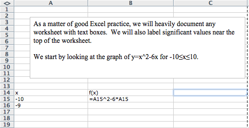
We start by producing a column for \(x\) and one for \(f(x)\text{.}\) In the column for \(x\) we start with values \(-10\) and \(-9\text{,}\) so that we can complete the column with a quick fill. Similarly, we start the \(f(x)\) columns in the first cell with the “\(x\)” replaced by the appropriate cell reference. In this case the formula for \(f(x)\) is in cell B15 and \(x\) is in cell A15.
We then use quick fill and quick copy to fill out the table.
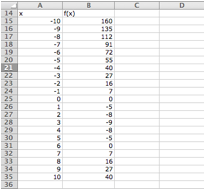
Figure1.4.2.
With the values of the cells filled in we highlight the cells we want to graph (A14 through B35) and add a scatter plot for the highlighted values.
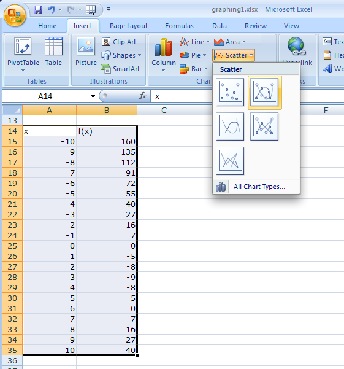
Figure1.4.3.
(The location of the scatterplot will be a bit different with Macs. The scatterplot is in the Charts ribbon, under other, on Macs.) This gives the desired graph.
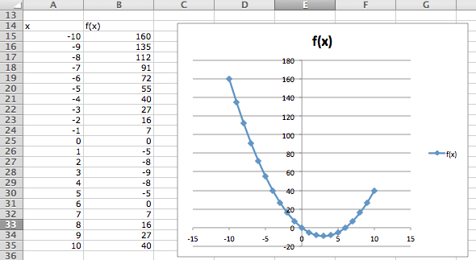
Subsection1.4.2A graph with parameters
Figure1.4.4.Video presentation of this example
Graphing \(y=x^2-6 x\) as an example of \(y = a x^2 + b x + c\) over the domain \(-10 \le x \le 10\text{.}\)
For the second example, we want the same graph, but we want the ability to easily convert the graph of our first quadratic into a different quadratic function. The solution is to consider \(a\text{,}\)\(b\text{,}\) and \(c\) to be parameters that we can change.
Toward the top of the worksheet, we put the labels \(a\text{,}\)\(b\text{,}\) and \(c\text{,}\) and give values for those parameters. In this case the values of \(a\text{,}\)\(b\text{,}\) and \(c\) are in cells B9, B10, and B11 respectively.
Now we set up the problem in the same way we did above, except that we are using absolute references for \(a\text{,}\)\(b\text{,}\) and \(c\text{,}\) and relative references for \(x\text{.}\)
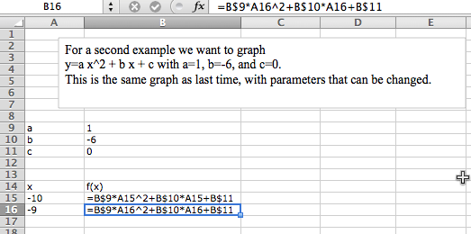
Figure1.4.5.
Now, we once again do a quick fill to complete the table, and then add a scatterplot.
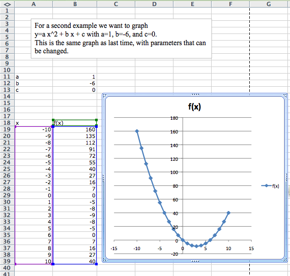
The difference with this second example is that if I now want to look at the graph of \(y = -x^2 + 3 x + 10\text{,}\) I simply change the values of the parameters \(a\text{,}\)\(b\text{,}\) and \(c\text{.}\)
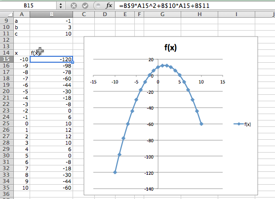
Subsection1.4.3Controlling the viewing window
Figure1.4.6.Video presentation of this example
Graphing \(y=x^2 - 6 x\) as an example of \(y = a x^2 + b x + c\) over the domain \(-10 \le x \le 10\text{,}\) but with the ability to easily change the domain of the graph.
Often, when we graph, we will want to change the domain of the graph. Most easily, I may want to zoom in on a particular region to get a better view of some interesting feature. I may want to look closely at several different regions.
To do this we will again plot 21 points, but we want to have control of the starting point and the change in x between the first and second points. First we add labels and values for x-start and x-step. Then we need a bit of care in defining the values of \(x\text{.}\) The first value of \(x\) (cell A18) is the value of x-start. Every other value of x is defined as the previous value of x plus the value of x-step.
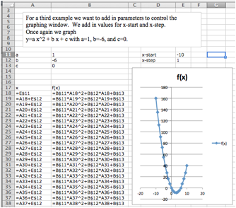
In this case, I want a better look at the vertex of the parabola. I decide I want to see the graph for \(0 \le x \le 5\text{.}\) My value for x-start is 0. My value for x-step is one twentieth of the distance from 0 to 5, or \((5-0)/20 = 0.25\text{.}\) I plug those values in and see the graph.
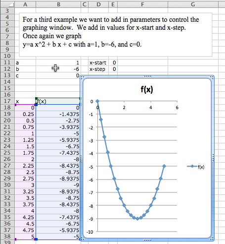
Subsection1.4.4Graphing more than one function
Figure1.4.7.Video presentation of this example
We would also like to put two or more graphs together. For our examples, we will want to use the functions \(f(x) = x - 3\text{,}\)\(g(x) = (x^2 - x)/10\text{,}\) and \(h(x) = x^3 - x\text{.}\) We start by using the procedure given above to make a chart of values for the three functions.
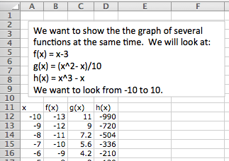
We then simply select the cells for \(x\) and the functions we want graphed together and produce a scatterplot as before. (To graph \(g(x)\) and \(h(x)\) together, we want to select the columns for \(x\text{,}\)\(g(x)\text{,}\) and \(h(x)\text{.}\))
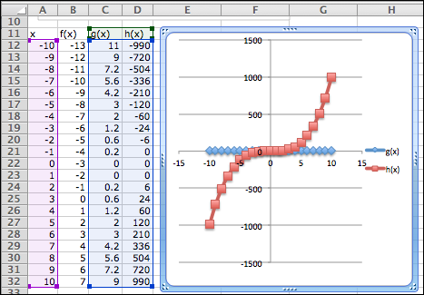
Figure1.4.8.
One problem with the graph of \(g(x)\) and \(h(x)\) together is that the functions have different orders of magnitude, so we do not see that \(y = g(x)\) is a parabola. One remedy is to use a secondary axis for the graph of \(h(x)\text{.}\) (Simply double click on one of the points for \(h(x)\text{,}\) and select secondary axis from the axes tab.)
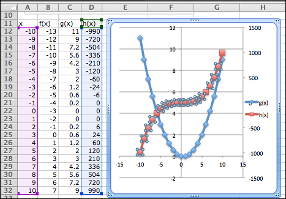
Figure1.4.9.
Subsection1.4.5Formatting a chart
Excel has a lot of ways to add formatting to a graph or chart, many more than we want to be concerned with at this point. We simply point out a few and leave it to the reader to explore how this should be used for a good visual presentation. If you click once on the chart to select it, the Chart tab in the home ribbon, adds sub-tabs for layout and format. With Chart Title, you can add a title to the chart, then edit it. The Axes icon allows you to add titles for the axes. If you select a data point form \(g(x)\text{,}\) you can then use the Data Labels icon to add values next to the points. The chart with these annotations is given below. The rule of thumb to follow is to add enough annotations for a reader to be able to easily understand what is happening in the chart.
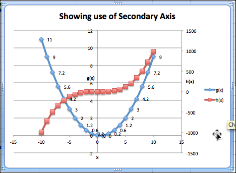
Figure1.4.10.
It is also worthwhile to note that you can manually set the y-range of a graph by double clicking on the axis and setting the values. This is particularly useful of the function has a vertical asymptote.
Throughout this book, we are limiting ourselves to mathematical tools that the student can reasonably expect to find in a generic work environment. That is one of the reasons for focusing on using spreadsheets and Excel. A second reason is that we will spend a significant amount of time on functions defined by data points, where we then try to construct a formula. However when we are starting with a formula, there are easier ways to produce a graph. The simplest is to use the free website, Wolfram Alpha 3 . For example to obtain a graph of the functions \(f(x) = x^2 - 3 x\text{,}\) as \(x\) ranges from \(-5\) to \(5\text{,}\) we simply type “plot x^2 - 3 x for x from -5 to 5” and obtain:
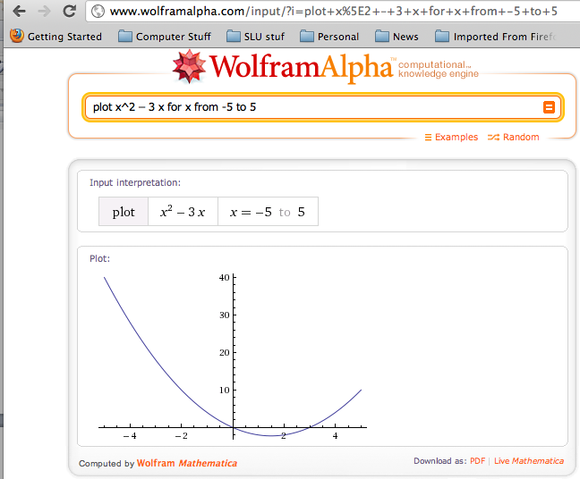
We will return to Wolfram Alpha from time to time, when we have nice formulas to manipulate.
Reading Questions1.4.7Reading Check
1.Reading check, Functions in the Business Setting.
This question checks your reading comprehension of the material is section 1.4, Graphing Functions in Excel, of Business Calculus with Excel. Based on your reading, select all statements that are correct. There may be more than one correct answer. The statements may appear in what seems to be a random order.
We can manually change the title of of a chart.
If we want to look at the graph of several quadratic polynomials, we have to start over for each graph.
Secondary axes are useful when looking at functions that are of different scales.
We use a marked scatterplot to graph with Excel.
We can only graph one function at a time with Excel.
Absolute and relative cell references can be used interchangeably.
Sometimes, there are other tools that are easier to use to produce a graph.
We can use absolute references to set up a graph where we can easily change the viewing window.
None of the above
Exercises1.4.8Exercises 1.4 Graphing functions with Excel
1.
Produce a worksheet that with a graph of the function \(f(x) = x^2 - 5 x\text{,}\) with \(x\) going from -10 to 10 by 1.
Solution.
The entry in cell B2 is =A2^2-5*A2; remember to use quickfill to complete the table
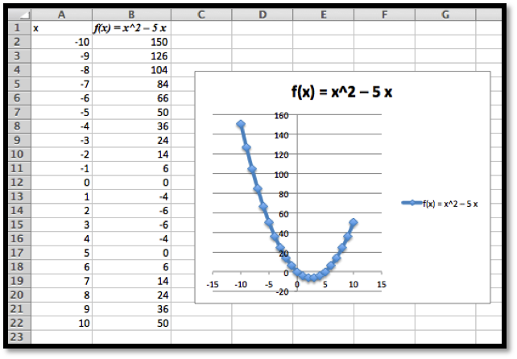
2.
Produce a worksheet that with a graph of the function \(g(x) = (x^2 - 5 x)/(x^2 + 7 x + 10)\text{,}\) with \(x\) going from -10 to 10 by 1. Explain why the graph is inaccurate. (Pay attention to places where there should be asymptotes.)
2* – Extra credit) — Fix the graph from problem 2 by adjusting the set of \(x\)-values used.
3.
Produce a worksheet with a graph of \(h(x) = x^3 + a x^2 + b x + c\) for \(x\) from -10 to 10, where the values of \(a\text{,}\)\(b\text{,}\) and \(c\) can be changed and the graph will update automatically. For initial values, use \(a = -2\text{,}\)\(b = 1\text{,}\) and \(c = -11\text{.}\)
Solution.
The entry in B5 should be =A5^3+$B$1*A5^2+$B$2*A5+$B$3. Note that the references to \(a\text{,}\)\(b\) and \(c\) are absolute references.
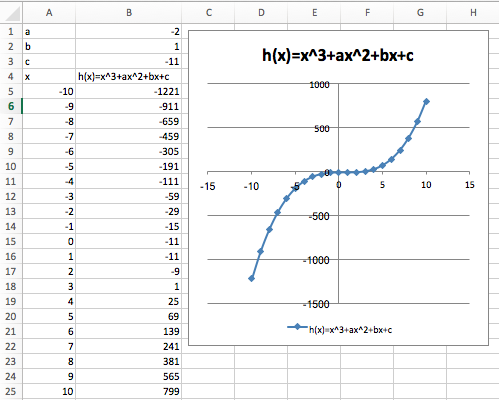
4.
Produce a worksheet with a graph of \(k(x) = (x^2 + a x + b)/( x + c)\) for x from -10 to 10, where the values of \(a\text{,}\)\(b\text{,}\) and \(c\) can be changed and the graph will update automatically. For initial values, use \(a = -5\text{,}\)\(b = 2\text{,}\) and \(c = -11\text{.}\)
5.
Produce a worksheet with a graph of \(h(x) = x^3 -2 x^2 + x -11\) for \(x\) going from a to b, where the values of \(a\) and \(b\) can be changed and the graph will update automatically. For initial values, use \(a = -5\) and \(b = 5\text{.}\)
Solution.
The entries are \(a\) and \(b\text{,}\) and the step size. We assume here that we are using 10 points to create a graph.
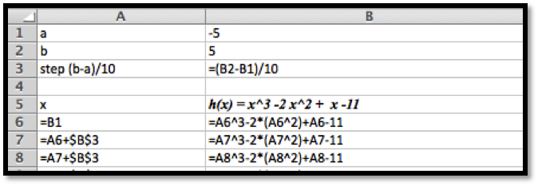
The data and the graph looks as follows, and changing \(a\) and \(b\) allows us to quickly find several different graphs of the same function.
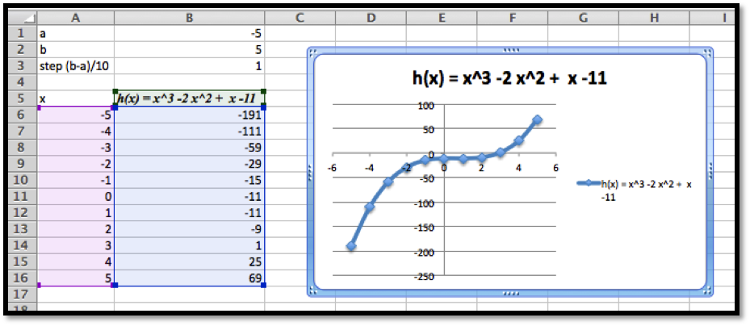
6.
Produce a worksheet with a graph of \(k(x) = (x^2 -5 x + 2)/( x -11)\) for \(x\) going from \(a\) to \(b\text{,}\) where the values of a and b can be changed and the graph will update automatically. For initial values, use \(a = -5\) and \(b = 5\text{.}\)
7.
(Writing assignment) Write a report of 2 pages or less on the graph of the function \(f(x) = (x^2 + 7 x + 10)/(x^2 - 3 x +2)\text{.}\) The report should be in Word (or other word processor) format with at least 2 graphs that illustrate different features by looking at different viewing windows.
8.
Produce a worksheet with graphs of \(f(x) = 2 x + 5\) and \(g(x) = x^3 - 9 x\text{,}\) for x going from -10 to 10. Use secondary axes so that both graphs use the full plotting window.
9.
Produce a worksheet with graphs of \(h(x) = (x^3 - 9 x)/(x^2 + 3 x + 35/16)\) and \(k(x) = 2 x^2 + 5\text{,}\) for x going from -10 to 10. Use secondary axes so that both graphs use the full plotting window. Adjust the range of \(y\) values used to make the graph reasonable.
Solution.
The entries should look like this:
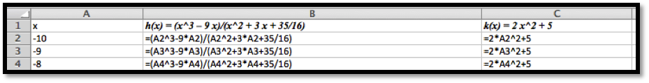
Using secondary axes we are able to show the important feature of each of the graphs.
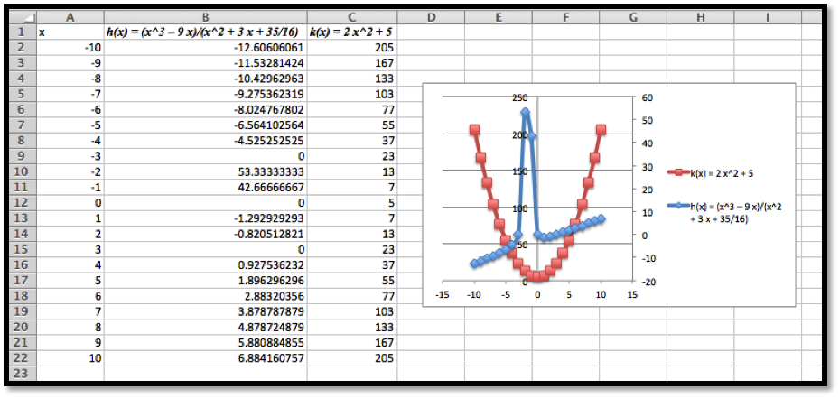
10.
Produce a worksheet with graphs of \(f(x) = 2 x + 3\) and \(g(x) = -2 x +5\text{,}\) for \(x\) going from -10 to 10. Add a title to the chart. Do something interesting with the fonts or other options and explain what you did.
11.
Use Wolfram Alpha to produce a graph of \(f(x) = x^3 - 16 x\text{,}\) for \(x\) going from -5 to 5. Use your favorite screen capture software and paste the result into an Excel worksheet.
Solution.
Using Wolfram, the command and the resulting graph look like this: